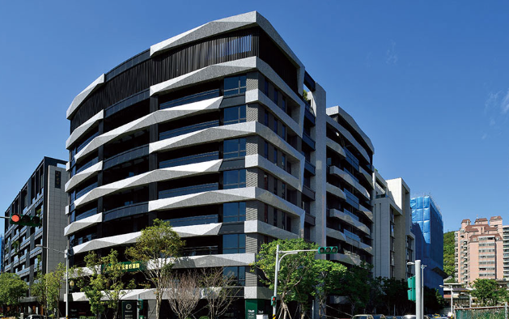
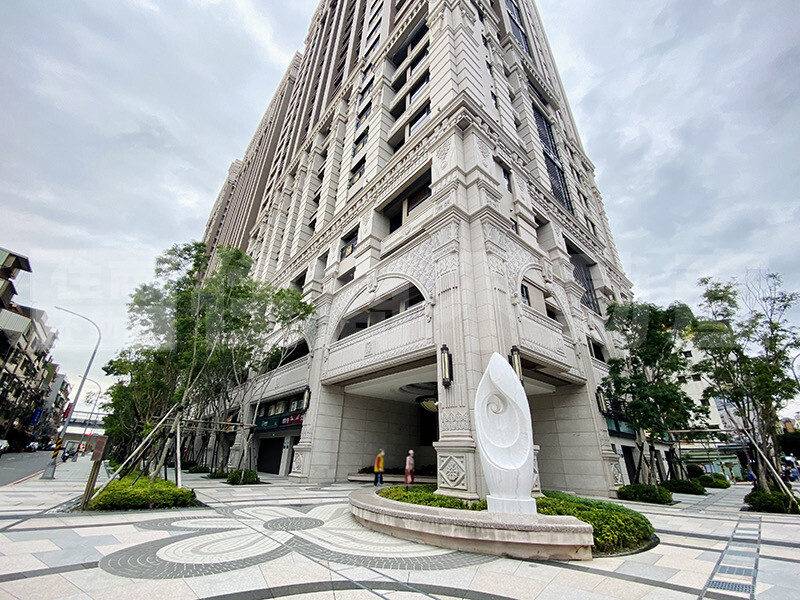
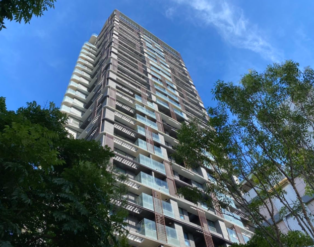
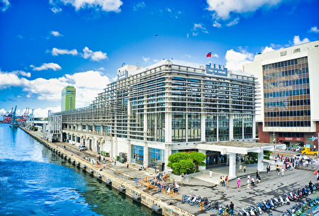
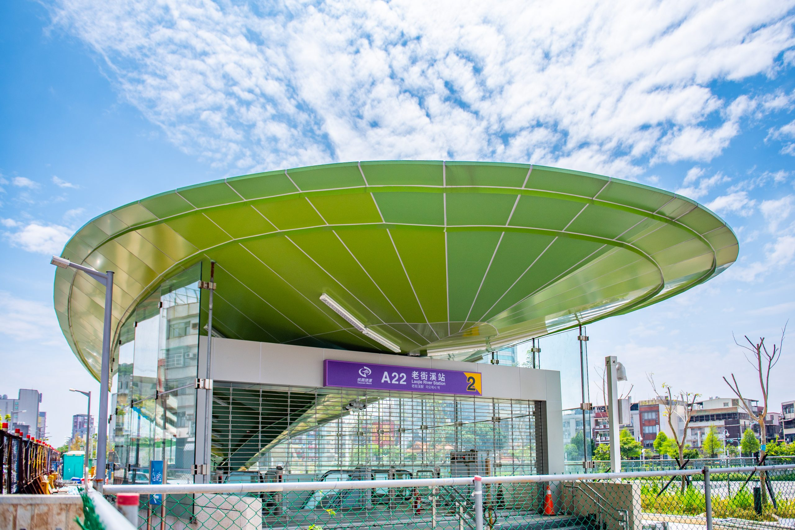
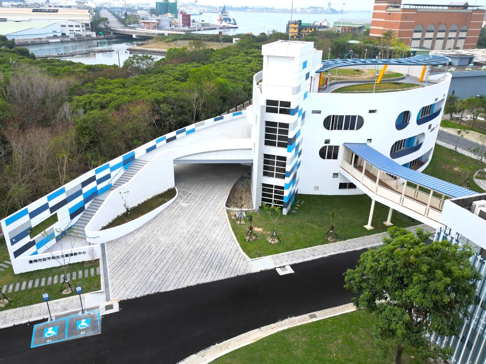

工程實績
以下為部分已完工案例：

宏築玉山岩空調通風、水電消防住宅新建工程
完工年度：105 年

開晟建設勝開大地新建機電通風工程
完工年度：109 年

昕彤觀瀾住宅新建工程
完工年度：110 年

基隆港東3東4碼頭旅運設施新建工程
完工年度：110 年

北投宋公館拆屋重建集合住宅工程
完工年度：110 年

桃園國際機場聯外捷運系統建設計畫(A22)機械空調工程
完工年度：110 年

富邦醴仁住宅新建案工程
完工年度：112 年

臺南安平再生水廠統包工程-消防及通風空調工程
完工年度：113 年

廣宇晴朗二期集合住宅新建工程-水電消防工程
完工年度：113 年
歷年實績一覽表
| 年份 | 業主 | 承攬工程 |
|---|---|---|
| 108年 | 大陸工程股份有限公司 | 開晟建設盛開大地新建第二階段臨時水電工程 |
| 108年 | 益鼎工程股份有限公司 | 開晟建設盛開大地新建機電通風工程 |
| 108年 | 大陸工程股份有限公司 | 泰民石牌第一階段臨時水電工程 |
| 107年 | 大陸工程股份有限公司 | 華固新天地機電工程臨時給排水重新建置勞務工程 |
| 107年 | 大陸工程股份有限公司 | 華固新天地機電裝修及管路清疏攝影工程 |
| 107年 | 裕隆城開發股份有限公司 | 國揚南方莊園工務所臨時水電空調工程 |
| 106年 | 大陸工程股份有限公司 | 國揚南方莊園第一階段臨時水電工程 |
| 105年 | 大陸工程股份有限公司 | 源茂大孝空調設備工程 |
| 105年 | 大陸工程股份有限公司 | 琢賦北商新建空調工程 |
| 105年 | 裕隆工程股份有限公司 | 國揚忠孝第一階段臨時水電工程 |
| 105年 | 大陸工程股份有限公司 | 第一區管理處辦公大樓監控中心興建工程空調工程 |
| 104年 | 大陸工程股份有限公司 | 兆模忠孝 101 機電住宅新建工程 |
| 104年 | 大陸工程股份有限公司 | 華固天鑄工務所水電空調及裝修工程 |
| 104年 | 大陸工程股份有限公司 | 華固天鑄地下室臨時通風設備工程 |
| 104年 | 大陸工程股份有限公司 | 啟佳中和第一階段臨時水電設備工程 |
| 104年 | 廣東晴朗股份有限公司 | 廣東晴朗臨時水電設備工程 |
| 103年 | 芳園資產開發股份有限公司 | 台中文華星享道酒店熱回收工程 |
| 103年 | 大陸工程股份有限公司 | 兒童新樂園水電環控空調工程 |
| 103年 | 金永德實驗室設備有限公司 | 三芝馬偕醫學院 P2 實驗室空調工程 |
| 103年 | 大陸工程股份有限公司 | 遠雄建設 H89 三峽園新建工程空調工程 |
| 103年 | 大陸工程股份有限公司 | 中華電信 IDC 工務所空調設備工程 |
| 103年 | 大陸工程股份有限公司 | 華固新天地第一階段臨時水電工程 |
| 101年 | 芳園資產開發股份有限公司 | 旗津飯店工程空調標 |
| 101年 | 大陸工程股份有限公司 | 新莊副都心第一階段臨時水電工程 |
| 101年 | 大陸工程股份有限公司 | 新莊副都心消防排煙及停車場通風設備工程 |
| 101年 | 大陸工程股份有限公司 | 南港展覽館擴建機電臨時水電工程 |
| 100年 | 全科企業股份有限公司 | 製程空調高溫無塵室烘箱空調工程 |
| 100年 | 翰沃生電科技股份有限公司 | 無塵室低濕恆溫製程空調工程 |
| 100年 | 大陸工程股份有限公司 | 大直宜華第一階段臨時水電工程 |
| 100年 | 統營營造股份有限公司 | 內湖星巴克水電工程 |
| 100年 | 台北市聯合醫院 | 台北市聯合醫院陽明院100年度兒童呼吸照護病房空調工程 |
| 100年 | 大陸工程股份有限公司 | 信義路四段福德坑段空調工程 (謙華案) |
| 100年 | 大陸工程股份有限公司 | 海華大地集合住宅新建空調工程 |
| 100年 | 中欣室內裝修設計股份有限公司 | 僑威華西區別墅水電空調新建工程 |
| 98年 | 台北市教會 | 台北市教會第37集會所新建空調工程 |
| 98年 | 全科企業股份有限公司 | 物料放置區空調工程 |
| 98年 | 蘆閣汽車旅館(林森館) | 林森館裝修水電及空調修繕工程 |
| 98年 | 匯豐商業銀行股份有限公司 | 中和分行空調工程 |
| 97年 | 華夏技術學院 | 恆毅樓分離式空調工程 |
| 97年 | 家畜衛生試驗所 | 牛海綿狀病毒實驗室 P3 實驗室環境提升工程 |
| 97年 | 樺福建設開發股份有限公司 | 七張捷運站聯合開發大樓東棟地下停車場及機房通風設備變更工程 |
| 97年 | 樺福建設開發股份有限公司 | 七張捷運站聯合開發大樓東棟一樓大廳空調工程 |
| 97年 | 台北影業股份有限公司 | 台北影業策略性產物空調新建暨沖印室清淨室 |
| 97年 | 匯格股份有限公司 | FSM 餐飲服務聯合大樓新建 150RT 變頻直膨空調工程 |
| 96年 | 基隆仁祥醫院 | 眼科手術室 1000 級清淨室空調及設備工程 |
| 96年 | 大魯閣織維 | 商業空調工程 |
| 96年 | 基隆謝公館 | 70RT 直膨 VRV 系統住宅空調工程 |
| 96年 | 全科企業股份有限公司 | 100 級清淨室空調工程 |
| 96年 | 友聚工業有限公司 | 1000 級清淨室空調工程 |
| 95年 | 榮電股份有限公司 | 牛海綿狀腦病毒診斷實驗室隔間工程 |
| 95年 | 宏達電國際電子廠 | 廠辦增建空調工程 |
| 95年 | 宏達電國際電子廠 | 消防風管排煙工程 |